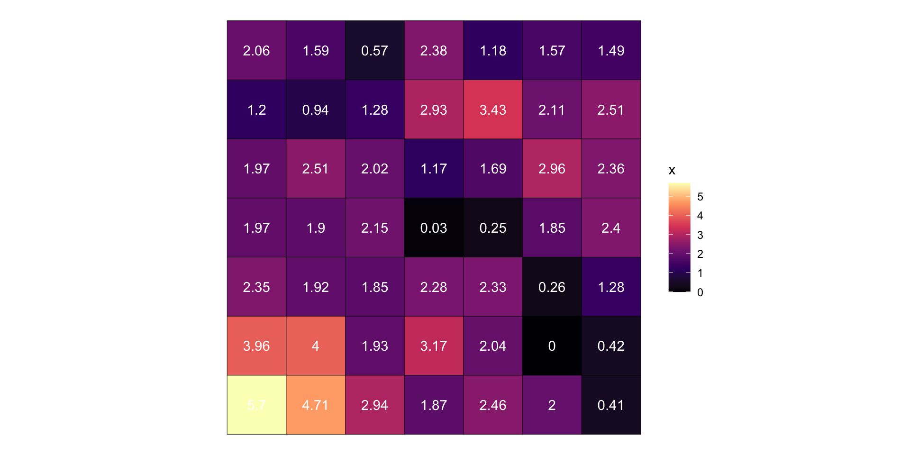
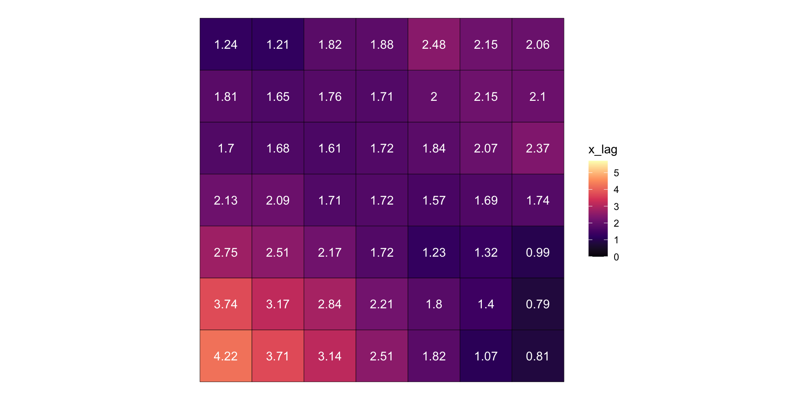
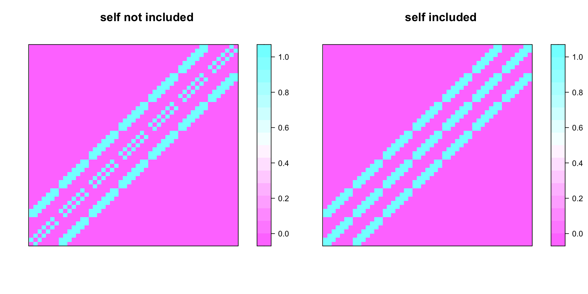

options(width = 78)Hot Spot Analysis
Gi and Gi* foundations
Objective:
identify clusters of high or low values in space
LISA is going to help us
- local indicators of spatial association (LISA)
- decompose global statistics to the local level
- The Local Moran’s I is the most famous
Local Indicators of Spatial Association—LISA
Luc Anselin, 1995
Which LISA for hot spots?
- Getis-Ord Gi and Gi*
- Local versions of the Getis-Ord Global G
note: the \(i\) subscript is a good hint that a measure is local
Getis-Ord G
- G informs of the presence of high-high or low-low clustering
\[ G = \frac{\sum_{i = 1}^{n} \sum_{j = 1}^{n} w_{ij}x_ix_j}{\sum_{i = 1}^{n}\sum_{j = 1}^{n} x_i x_j} \]
Local Getis-Ord G (\(G_i\))
- Most global statistics are a double sum
- first over \(j\) and then \(i\)
- \(G = \frac{\sum_{i = 1}^{n} \sum_{j = 1}^{n} w_{ij}x_ix_j}{\sum_{i = 1}^{n}\sum_{j = 1}^{n} x_i x_j}\)
- Decompose the G into a LISA
- \(Gi = \frac{\sum_j w_{ij} x_j}{\sum_j x_j}\)
\(G_i\)
- The numerator is the spatial lag: \(\sum_j w_{ij} x_j\)
- Denominator is the sum of all x values except \(x_i\): \(\sum_j x_j\)
- \(G_i = \frac{\sum_j w_{ij} x_j}{\sum_j x_j}\)
“ratio of the weighted average of the values in the neighboring locations to the sum of all values, not including the value at the location” (GeodaCenter)
note: \(G_i\) is often returned as a Z-score
Example
Example

Example data
Simple feature collection with 49 features and 1 field
Geometry type: POLYGON
Dimension: XY
Bounding box: xmin: 0 ymin: 0 xmax: 7 ymax: 7
CRS: NA
# A tibble: 49 × 2
x geometry
<dbl> <POLYGON>
1 5.70 ((0 0, 1 0, 1 1, 0 1, 0 0))
2 4.71 ((1 0, 2 0, 2 1, 1 1, 1 0))
3 2.94 ((2 0, 3 0, 3 1, 2 1, 2 0))
4 1.87 ((3 0, 4 0, 4 1, 3 1, 3 0))
5 2.46 ((4 0, 5 0, 5 1, 4 1, 4 0))
6 2.00 ((5 0, 6 0, 6 1, 5 1, 5 0))
7 0.408 ((6 0, 7 0, 7 1, 6 1, 6 0))
8 3.96 ((0 1, 1 1, 1 2, 0 2, 0 1))
9 4.00 ((1 1, 2 1, 2 2, 1 2, 1 1))
10 1.93 ((2 1, 3 1, 3 2, 2 2, 2 1))
# … with 39 more rows
# ℹ Use `print(n = ...)` to see more rowsThe numerator
grd_nb <- grd |>
mutate(
nb = st_contiguity(geometry),
wt = st_weights(nb),
x_lag = st_lag(x, nb, wt)
)The numerator
Simple feature collection with 49 features and 5 fields
Geometry type: POLYGON
Dimension: XY
Bounding box: xmin: 0 ymin: 0 xmax: 7 ymax: 7
CRS: NA
# A tibble: 49 × 6
geometry id nb wt x x_lag
* <POLYGON> <int> <nb> <list> <dbl> <dbl>
1 ((0 0, 1 0, 1 1, 0 1, 0 0)) 1 <int [3]> <dbl [3]> 5.70 4.22
2 ((1 0, 2 0, 2 1, 1 1, 1 0)) 2 <int [5]> <dbl [5]> 4.71 3.71
3 ((2 0, 3 0, 3 1, 2 1, 2 0)) 3 <int [5]> <dbl [5]> 2.94 3.14
4 ((3 0, 4 0, 4 1, 3 1, 3 0)) 4 <int [5]> <dbl [5]> 1.87 2.51
5 ((4 0, 5 0, 5 1, 4 1, 4 0)) 5 <int [5]> <dbl [5]> 2.46 1.82
6 ((5 0, 6 0, 6 1, 5 1, 5 0)) 6 <int [5]> <dbl [5]> 2.00 1.07
7 ((6 0, 7 0, 7 1, 6 1, 6 0)) 7 <int [3]> <dbl [3]> 0.408 0.807
8 ((0 1, 1 1, 1 2, 0 2, 0 1)) 8 <int [5]> <dbl [5]> 3.96 3.74
9 ((1 1, 2 1, 2 2, 1 2, 1 1)) 9 <int [8]> <dbl [8]> 4.00 3.17
10 ((2 1, 3 1, 3 2, 2 2, 2 1)) 10 <int [8]> <dbl [8]> 1.93 2.84
# … with 39 more rows
# ℹ Use `print(n = ...)` to see more rowsThe numerator

The denominator
- the of sum of all x values
- OR, spatial lag of a complete graph w/ binary weights
st_weights(nb, style = "B")
- Complete graph: all locations are connected
st_complete_nb(n, diag = FALSE)
The denominator
complete_nb <- st_complete_nb(n = nrow(grd), diag = FALSE)
complete_nb[[1]] [1] 2 3 4 5 6 7 8 9 10 11 12 13 14 15 16 17 18 19 20 21 22 23 24 25
[25] 26 27 28 29 30 31 32 33 34 35 36 37 38 39 40 41 42 43 44 45 46 47 48 49denom <- st_lag(
grd_nb$x,
complete_nb,
st_weights(complete_nb, style = "B")
)
denom [1] 92.63630 93.63145 95.40112 96.47070 95.87481 96.33858 97.92817 94.37887
[9] 94.33532 96.40508 95.16384 96.29836 98.33663 97.91501 95.98179 96.41519
[17] 96.48203 96.05971 96.01014 98.07216 97.06022 96.37010 96.43836 96.18403
[25] 98.30599 98.08788 96.49048 95.93543 96.36399 95.82990 96.31504 97.17146
[33] 96.65137 95.37411 95.97823 97.14021 97.39183 97.05320 95.40683 94.90385
[41] 96.22288 95.82727 96.27249 96.75152 97.76805 95.96140 97.15449 96.76554
[49] 96.84677The denominator
grd_nb |>
mutate(
complete_nb = st_complete_nb(n()),
wt_b = st_weights(complete_nb, style = "B"),
sum_xj = st_lag(x, complete_nb, wt_b)
) |>
select(x, x_lag, sum_xj)Simple feature collection with 49 features and 3 fields
Geometry type: POLYGON
Dimension: XY
Bounding box: xmin: 0 ymin: 0 xmax: 7 ymax: 7
CRS: NA
# A tibble: 49 × 4
x x_lag sum_xj geometry
<dbl> <dbl> <dbl> <POLYGON>
1 5.70 4.22 92.6 ((0 0, 1 0, 1 1, 0 1, 0 0))
2 4.71 3.71 93.6 ((1 0, 2 0, 2 1, 1 1, 1 0))
3 2.94 3.14 95.4 ((2 0, 3 0, 3 1, 2 1, 2 0))
4 1.87 2.51 96.5 ((3 0, 4 0, 4 1, 3 1, 3 0))
5 2.46 1.82 95.9 ((4 0, 5 0, 5 1, 4 1, 4 0))
6 2.00 1.07 96.3 ((5 0, 6 0, 6 1, 5 1, 5 0))
7 0.408 0.807 97.9 ((6 0, 7 0, 7 1, 6 1, 6 0))
8 3.96 3.74 94.4 ((0 1, 1 1, 1 2, 0 2, 0 1))
9 4.00 3.17 94.3 ((1 1, 2 1, 2 2, 1 2, 1 1))
10 1.93 2.84 96.4 ((2 1, 3 1, 3 2, 2 2, 2 1))
# … with 39 more rows
# ℹ Use `print(n = ...)` to see more rows\(G_i\)
grd_nb |>
mutate(
complete_nb = st_complete_nb(n()),
wt_b = st_weights(complete_nb, style = "B"),
sum_xj = st_lag(x, complete_nb, wt_b),
gi = scale(x_lag / sum_xj)
) |>
select(x, x_lag, sum_xj, gi)Simple feature collection with 49 features and 4 fields
Geometry type: POLYGON
Dimension: XY
Bounding box: xmin: 0 ymin: 0 xmax: 7 ymax: 7
CRS: NA
# A tibble: 49 × 5
x x_lag sum_xj gi[,1] geometry
<dbl> <dbl> <dbl> <dbl> <POLYGON>
1 5.70 4.22 92.6 3.22 ((0 0, 1 0, 1 1, 0 1, 0 0))
2 4.71 3.71 93.6 2.44 ((1 0, 2 0, 2 1, 1 1, 1 0))
3 2.94 3.14 95.4 1.57 ((2 0, 3 0, 3 1, 2 1, 2 0))
4 1.87 2.51 96.5 0.681 ((3 0, 4 0, 4 1, 3 1, 3 0))
5 2.46 1.82 95.9 -0.235 ((4 0, 5 0, 5 1, 4 1, 4 0))
6 2.00 1.07 96.3 -1.25 ((5 0, 6 0, 6 1, 5 1, 5 0))
7 0.408 0.807 97.9 -1.62 ((6 0, 7 0, 7 1, 6 1, 6 0))
8 3.96 3.74 94.4 2.44 ((0 1, 1 1, 1 2, 0 2, 0 1))
9 4.00 3.17 94.3 1.67 ((1 1, 2 1, 2 2, 1 2, 1 1))
10 1.93 2.84 96.4 1.13 ((2 1, 3 1, 3 2, 2 2, 2 1))
# … with 39 more rows
# ℹ Use `print(n = ...)` to see more rows\(G_i\) vs \(G_i^*\)
- The only difference is in neighbor matrix
- \(G_i^*\) includes the observation \(i\) in the calculation
- \(G_i\) does not
- often rewritten as \(G_i = \frac{\sum_{j\ne i} w_{ij} x_j}{\sum_{j \ne i} x_j}\)
- I don’t like this because they’re the same except the
nblist
\(G_i^*\)
- includes the observed value (focal observation)
- use
include_self(nb)

\(G_i^*\)
grd |>
transmute(
nb = include_self(st_contiguity(geometry)), # include the self
wt = st_weights(nb),
x_lag = st_lag(x, nb, wt),
# now we can sum all of x
denom = sum(x),
gi = scale(x_lag / denom)
)Simple feature collection with 49 features and 5 fields
Geometry type: POLYGON
Dimension: XY
Bounding box: xmin: 0 ymin: 0 xmax: 7 ymax: 7
CRS: NA
# A tibble: 49 × 6
nb wt x_lag denom gi[,1] geometry
* <nb> <list> <dbl> <dbl> <dbl> <POLYGON>
1 <int [4]> <dbl [4]> 4.59 98.3 3.46 ((0 0, 1 0, 1 1, 0 1, 0 0))
2 <int [6]> <dbl [6]> 3.87 98.3 2.50 ((1 0, 2 0, 2 1, 1 1, 1 0))
3 <int [6]> <dbl [6]> 3.10 98.3 1.47 ((2 0, 3 0, 3 1, 2 1, 2 0))
4 <int [6]> <dbl [6]> 2.40 98.3 0.539 ((3 0, 4 0, 4 1, 3 1, 3 0))
5 <int [6]> <dbl [6]> 1.92 98.3 -0.0988 ((4 0, 5 0, 5 1, 4 1, 4 0))
6 <int [6]> <dbl [6]> 1.22 98.3 -1.03 ((5 0, 6 0, 6 1, 5 1, 5 0))
7 <int [4]> <dbl [4]> 0.707 98.3 -1.72 ((6 0, 7 0, 7 1, 6 1, 6 0))
8 <int [6]> <dbl [6]> 3.77 98.3 2.37 ((0 1, 1 1, 1 2, 0 2, 0 1))
9 <int [9]> <dbl [9]> 3.26 98.3 1.69 ((1 1, 2 1, 2 2, 1 2, 1 1))
10 <int [9]> <dbl [9]> 2.74 98.3 0.992 ((2 1, 3 1, 3 2, 2 2, 2 1))
# … with 39 more rows
# ℹ Use `print(n = ...)` to see more rows\(G_i\) / \(G_i^*\) interpretation
- High \(G_i\) > 0: location with high value neighborhood
- Low \(G_i\) < 0: location with low value neighborhood
Hypothesis testing
- \(H_0\) - observed value is not spatially dependent
- \(H_1\) - observed value is spatially dependent
- \(H_0\) - we would expect to find this value under complete spatial randomness (CSR)
- \(H_1\) - we would not expect to find this value under CSR
resources:
- https://geodacenter.github.io/workbook/6a_local_auto/lab6a.html